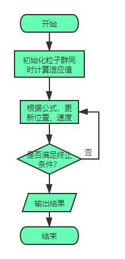
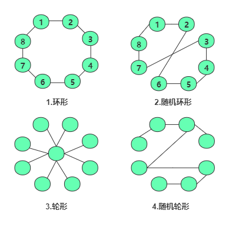

<!DOCTYPE html>
<html>
<head><meta name="generator" content="Hexo 3.9.0">
  <!-- hexo-inject:begin --><!-- hexo-inject:end --><meta charset="UTF-8">
  
  <meta name="description" content="lightdm&#39;s Blog">
  

  
  <meta name="keywords" content="blog.IT.think">
  
  
  <meta name="google-site-verification" content="true">
  <meta name="baidu-site-verification" content="true">
  <meta name="msvalidate.01" content="BBA0F05A054A52937A445B0457B5D099">
  
  <title style="text-align:center">粒子群算法研究(1) | 月之燃梦</title>
  <meta name="viewport" content="width=device-width, initial-scale=1, maximum-scale=1">
  <meta name="description" content="粒子群算法（ Particle Swarm Optimization, PSO）最早是由Eberhart和Kennedy于1995年提出，它的基本概念源于对鸟群觅食行为的研究。设想这样一个场景:一群鸟在随机搜寻食物，在这个区域里只有一块食物，所有的鸟都不知道食物在哪里，但是它们知道当前的位置离食物还有多远。那么找到食物的最优策略是什么呢?最简单有效的就是搜寻目前离食物最近的鸟的周围区域。">
<meta name="keywords" content="优化算法,PSO">
<meta property="og:type" content="article">
<meta property="og:title" content="粒子群算法研究(1)">
<meta property="og:url" content="https://www.lightdream.xyz/ParticleSwamOptimization.html">
<meta property="og:site_name" content="月之燃梦">
<meta property="og:description" content="粒子群算法（ Particle Swarm Optimization, PSO）最早是由Eberhart和Kennedy于1995年提出，它的基本概念源于对鸟群觅食行为的研究。设想这样一个场景:一群鸟在随机搜寻食物，在这个区域里只有一块食物，所有的鸟都不知道食物在哪里，但是它们知道当前的位置离食物还有多远。那么找到食物的最优策略是什么呢?最简单有效的就是搜寻目前离食物最近的鸟的周围区域。">
<meta property="og:locale" content="zh-Hans">
<meta property="og:image" content="https://www.lightdream.xyz/image/PSO.png">
<meta property="og:image" content="https://www.lightdream.xyz/image/PSONeiborhood.png">
<meta property="og:updated_time" content="2020-02-28T09:39:46.091Z">
<meta name="twitter:card" content="summary">
<meta name="twitter:title" content="粒子群算法研究(1)">
<meta name="twitter:description" content="粒子群算法（ Particle Swarm Optimization, PSO）最早是由Eberhart和Kennedy于1995年提出，它的基本概念源于对鸟群觅食行为的研究。设想这样一个场景:一群鸟在随机搜寻食物，在这个区域里只有一块食物，所有的鸟都不知道食物在哪里，但是它们知道当前的位置离食物还有多远。那么找到食物的最优策略是什么呢?最简单有效的就是搜寻目前离食物最近的鸟的周围区域。">
<meta name="twitter:image" content="https://www.lightdream.xyz/image/PSO.png">
  
  
    <link rel="icon" href="/css/images/favicon.ico">
  
  <link rel="stylesheet" href="css/style.css">
  
<!-- Google Analytics -->
<script type="text/javascript">
(function(i,s,o,g,r,a,m){i['GoogleAnalyticsObject']=r;i[r]=i[r]||function(){
(i[r].q=i[r].q||[]).push(arguments)},i[r].l=1*new Date();a=s.createElement(o),
m=s.getElementsByTagName(o)[0];a.async=1;a.src=g;m.parentNode.insertBefore(a,m)
})(window,document,'script','//www.google-analytics.com/analytics.js','ga');

ga('create', 'true', 'auto');
ga('send', 'pageview');

</script>
<!-- End Google Analytics -->


  
  <link rel="stylesheet" href="//cdn.bootcss.com/highlight.js/9.2.0/styles/vs.min.css">
  <script src="//cdn.bootcss.com/highlight.js/9.2.0/highlight.min.js"></script>
  <!-- baidutongji -->
  <script type="text/javascript">
		var _hmt = _hmt || [];
		(function() {
		  var hm = document.createElement("script");
		  hm.src = "https://hm.baidu.com/hm.js?21db01c8f539883ad7f58ebd48f05a73";
		  var s = document.getElementsByTagName("script")[0]; 
		  s.parentNode.insertBefore(hm, s);
		})();
   </script>
   <!--baiduformit -->
   <script>
	(function(){
		var bp = document.createElement('script');
		var curProtocol = window.location.protocol.split(':')[0];
		if (curProtocol === 'https') {
			bp.src = 'https://zz.bdstatic.com/linksubmit/push.js';        
		}
		else {
			bp.src = 'http://push.zhanzhang.baidu.com/push.js';
		}
		var s = document.getElementsByTagName("script")[0];
		s.parentNode.insertBefore(bp, s);
	})();
	</script>
<link rel="alternate" href="atom.xml" title="月之燃梦" type="application/atom+xml"><!-- hexo-inject:begin --><!-- hexo-inject:end -->
</head></html>
<body class="home blog custom-background custom-font-enabled single-author">
  <!-- hexo-inject:begin --><!-- hexo-inject:end --><div id="page" class="feed site">
      <header id="masthead" class="site-header" role="banner">
    <hgroup>
      <h1 class="site-title">
        <a href="index.html" title="月之燃梦" rel="home">月之燃梦</a>
      </h1>
      
        <h2 class="site-description">
          <a href="index.html" id="subtitle">你是大千世界尘埃等闲，也是我仅有的风花雪月</a>
        </h2>
      
    </hgroup>

    <nav id="site-navigation" class="main-navigation" role="navigation">
            <button class="menu-toggle">菜单</button>
            <a class="assistive-text" href="/#content" title="跳至内容">跳至内容</a><!--TODO-->
            <div id="menu-main-content" class="menu-main-container">
                <ul id="menu-main" class="nav-menu">
                
                    <li class="menu-item menu-item-type-post_type menu-item-object-page"><a href="index.html">主页</a></li>
                
                    <li class="menu-item menu-item-type-post_type menu-item-object-page"><a href="/archives">归档</a></li>
                
                    <li class="menu-item menu-item-type-post_type menu-item-object-page"><a href="/views">关于</a></li>
                
                    <li class="menu-item menu-item-type-post_type menu-item-object-page"><a href="/atom.xml">订阅</a></li>
                
                    <li class="menu-item menu-item-type-post_type menu-item-object-page"><a href="/road">求索</a></li>
                
                </ul>
            </div>
    </nav>
</header>
      <div id="main" class="wrapper">
        <div id="primary" class="site-content">
			<div id="content" role="main"><article id="post-ParticleSwamOptimization" class="post-ParticleSwamOptimization post type-post status-publish format-standard hentry">
		
      <center><header class="entry-header">
        
        
  
    <h1 class="entry-title article-title">
      粒子群算法研究(1)
    </h1>
  

		<div style="margin-top:10px;">
    <span class="post-time1">
      <span class="post-meta-item-icon">
        <i class="fa fa-keyboard-o"></i>
        <span class="post-meta-item-text">字数统计:</span>
        <span class="post-count">1,542字</span>
      </span>
    </span>
	&nbsp;|
    <span class="post-time2">
    <span class="post-meta-item-icon">
        <i class="fa fa-hourglass-half"></i>
        <span class="post-meta-item-text">阅读时长:约</span>
        <span class="post-count">6&nbsp;分钟</span>
      </span>
    </span>
</div>
        	 
      </header></center>
	  <!-- .entry-header -->
    <div class="entry-content">
      
		<center><span id="busuanzi_container_page_pv">
		总阅读量<span id="busuanzi_value_page_pv"></span>次
		</span></center>
		</br></br>
        <script src="\assets\js\APlayer.min.js"> </script><p>　　粒子群算法（ Particle Swarm Optimization, PSO）最早是由Eberhart和Kennedy于1995年提出，它的基本概念源于对鸟群觅食行为的研究。设想这样一个场景:一群鸟在随机搜寻食物，在这个区域里只有一块食物，所有的鸟都不知道食物在哪里，但是它们知道当前的位置离食物还有多远。那么找到食物的最优策略是什么呢?最简单有效的就是搜寻目前离食物最近的鸟的周围区域。<br><a id="more"></a><br>　　PSO算法就从这种生物种群行为特性中得到启发并用于求解优化问题。在PSO中，每个优化问题的潜在解都可以想象成d维搜索空间上的一个点，我们称之为“粒子”（Particle），所有的粒子都有一个被目标函数决定的适应值(Fitness Value )，每个粒子还有一个速度决定他们飞翔的方向和距离，然后粒子们就追随当前的最优粒子在解空间中搜索。随着位置更新迭代次数增加，粒子最终在搜索空间上收敛于最优值。    </p>
<h3 id="标准粒子群算法（全局版本）"><a href="#标准粒子群算法（全局版本）" class="headerlink" title="标准粒子群算法（全局版本）"></a>标准粒子群算法（全局版本）</h3><p>　　例如，求函数$y=1-cos(3x)e^{-x}$在$[0,4]$上的最大值，并在[0,4]之间放置了两个随机的点，假设为$x_1=1.5,x_2=2.5$，则$x_1,x_2$为标量。对于高维情况，比如二维，求$z=2x_1+{x_2}^{2}$，此时每个粒子都是二维的，记</p>
<script type="math/tex; mode=display">P_1=(x_{11},x_{12}),P_2=(x_{21},x_{22}),...,\\ 
P_n=(x_{n1},x_{n2})</script><p>这里$n$为粒子群群体规模，也是粒子个数，每个粒子维数为2。更一般的粒子维数为q，则这个种群中有n个粒子，每个粒子为q维。<br>　　对由n个粒子组成的Q维空间进行搜索，第i个粒子表示$x_i=(x_{i1},x_{i2},…,x_{iq}), i=1,2,…,n$，其在各个维度上速度表示为$v_i=(v_{i1},v_{i2},…,v_{iq})$，每个粒子在搜索时考虑以下两个因素：</p>
<ol>
<li>自己搜索到的历史最优值$p_i, p_i=(p_{i1},p_{i2},…,p_{iq}),i=1,2,…,n$</li>
<li>全部粒子搜索到的最优值$p_g, p_g=(p_{g1},p_{g2},…,p_{gn}), i=1,2…,n$<br>下面是粒子在搜索时位置速度更新公式：<script type="math/tex; mode=display">{v_{id}}^{k+1}=w{v_{id}}^{k}+c_1\xi({p_{id}}^{k}-{x_{id}}^{k})\\
　　+c_2\eta({p_{gd}}^{k}-{x_{id}}^{k})</script><script type="math/tex; mode=display">x_{id}^{k+1}=x_{id}^k+rv_{id}^{k+1}</script>其中的参数：</li>
</ol>
<ul>
<li>$w$为保持原来速度的系数，即惯性权重，其值非负。当值较大时，全局寻优能力强，局部寻优也就弱了；其值较小时，局部寻优能力强，全局寻优能力弱。</li>
<li>$c_1$是跟踪自己历史最优值的权重系数，表示粒子自身的认识，所以叫“认知”，通常设置为2</li>
<li>$c_2$是粒子跟踪群体最优值的权重系数，表示粒子对整个群体知识的认识，叫“社会知识”，经常叫做“社会”，通常设置为2</li>
<li>$\xi, \eta$是[0,1]区间均匀分布的随机数</li>
<li>r 是对位置更新的时候在速度前面加的一个系数，这个系数被称为约束因子，通常设置为1<br>　　这就是一个标准的粒子群算法<br>　<center></center><br>其中<strong>终止条件</strong>可以为适应值到达一定数值或循环一定的次数。因这里的粒子同时跟踪自己的历史最优值和群体最优值来改变自己的位置预速度，所以又叫做<strong>全局版本的标准粒子群</strong>优化算法。    <h3 id="标准粒子群算法（局部版本）"><a href="#标准粒子群算法（局部版本）" class="headerlink" title="标准粒子群算法（局部版本）"></a>标准粒子群算法（局部版本）</h3>如果改变全局版本的速度更新公式，让每个粒子位置速度更新根据：     </li>
<li>粒子自己搜索到的历史最优值$p_i$</li>
<li>粒子邻域内搜索搜索到的最佳值$pn_{k}$<br>其余保持不变，则就成了<strong>局部版本的粒子群算法</strong>。<br>　　一般一个粒子$p_i$的邻域随着迭代次数增加，第一次迭代时，其邻域为0，随着迭代次数邻域线性变大，最后扩展到整个粒子群，这时就变成了全局版本的粒子群算法了。实践证明：<br><strong>全局版本的粒子群算法收敛速度较快，但容易陷入局部最优解；而局部版本的收敛速度慢，但是不容易陷入局部最优。故现在粒子群优化算法大都在<em>收敛速度</em>与<em>摆脱局部最优</em>之间做权衡。</strong><h3 id="静态邻域："><a href="#静态邻域：" class="headerlink" title="静态邻域："></a>静态邻域：</h3>按照粒子的编号取粒子的邻域</li>
<li>环形</li>
<li>随机环形</li>
<li>轮形</li>
<li>随机轮形<br>　<center></center></li>
</ul>
<ul>
<li>环形取法如上<strong>图1</strong>中:<br>　　对编号为1的粒子来说，当粒子邻域个数k为0时，则邻域是其本身；粒子邻域个数k为1时，则其邻域为{2,8};粒子邻域个数k为2时，其邻域为{2,8,7,3}…当邻域个数为4时，粒子的邻域就为整个粒子群了。</li>
<li>轮形取法如上<strong>图3</strong><br>　　对于指定粒子i，其位于邻域中心，其它粒子以一定规则与粒子i相连。只有中心粒子与其它相连粒子进行信息交换，中心粒子通过比较邻域中所有粒子携带信息而向其中最优粒子靠近。同时，邻域内最优信息通过中心粒子的性能改善而传播到种群的其它粒子。因此，中心个体令较好信息在种群中的传播速度变慢而增大了全局搜索能力，不至于早收敛。<h3 id="动态邻域"><a href="#动态邻域" class="headerlink" title="动态邻域"></a>动态邻域</h3></li>
</ul>
<ul>
<li>按照粒子的欧式距离取粒子的邻域<br>　　记录任何两个粒子间最大距离为$d_m$,对每一粒子按照$\frac{||x_a - x_b||}{d_m}$,其中$||x_a-x_b||$为粒子a与粒子b的欧氏距离。而选择阈值$frac$根据迭代次数而变化，当另一粒子b满足$\frac{||x_a-x_b||}{d_m} &lt; frac$，认为b是当前粒子的邻域内。由于要计算所有粒子之间的距离，计算量大且需要很多额外的存储空间，所以该方法不常用。<br>参考文献：<br>[1]李丽,牛奔.[M]粒子群优化算法.北京:冶金工业出版社,2009</li>
</ul>
	
		</br>
		<footer style="text-align: center" class="entry-meta">雪林于
		<a href="">
   <time datetime="2020-02-18T02:29:34.000Z" class="entry-date">
        2020年02月18日 10:29
    </time>
</a>
		
  <span class="article-delim">&#8226;</span>
  <div class="article-category">
  <a class="article-category-link" href="categories/优化算法/">优化算法</a>
  </div>

		
  <span class="article-delim">&#8226;</span>
  <ul class="article-tag-list"><li class="article-tag-list-item"><a class="article-tag-list-link" href="tags/PSO/">PSO</a></li><li class="article-tag-list-item"><a class="article-tag-list-link" href="tags/优化算法/">优化算法</a></li></ul>

		
			<!-- 来必力City版安装代码 -->
<div id="lv-container" data-id="city" data-uid="MTAyMC8zODM0Mi8xNDg3MA==">
<div> </br> 抛砖引玉 亦或 他山之石，可以攻玉。
</div>
<script type="text/javascript">
   (function(d, s) {
       var j, e = d.getElementsByTagName(s)[0];

       if (typeof LivereTower === 'function') { return; }

       j = d.createElement(s);
       j.src = 'https://cdn-city.livere.com/js/embed.dist.js';
       j.async = true;

       e.parentNode.insertBefore(j, e);
   })(document, 'script');
</script>
<noscript>为正常使用来必力评论功能请激活JavaScript</noscript>
</div>
<!-- City版安装代码已完成 -->
			
		</footer>
		
    </div>
	<!-- .entry-content -->
</article>

    
<nav class="nav-single">
    <h3 class="assistive-text">文章导航</h3>
    
        <span class="nav-previous"><a href="StrangeDream1.html" rel="prev"><span class="meta-nav">←</span> 奇怪的梦</a></span>
    
    
        <span class="nav-next"><a href="1003-Emergency.html" rel="next">1003 Emergency😏 <span class="meta-nav">→</span></a></span>
    
</nav><!-- .nav-single -->


</div>
		</div>
        <div id="secondary" class="widget-area" role="complementary">
  
    
	<aside class="widget">
        <h3 class="widget-title">站内搜索</h3>
        <div id="site_search">
			<input type="text" id="local-search-input" style="width: 200px;" results="0"/>
			<div id="local-search-result"></div>
        </div>
	</aside>
	
	
  
    
  <aside class="widget">
    <h3 class="widget-title">后起之秀</h3>
    <div class="widget-content">
      <ul>
        
          <li>
            <a href="StrangeDream1.html">奇怪的梦</a>
          </li>
        
          <li>
            <a href="">粒子群算法研究(1)</a>
          </li>
        
          <li>
            <a href="1003-Emergency.html">1003 Emergency😏</a>
          </li>
        
          <li>
            <a href="Lookbacktothepast.html">回望</a>
          </li>
        
          <li>
            <a href="CompilerPrinciple-preProcessAndLexAnalysis.html">预处理和词法分析器</a>
          </li>
        
          <li>
            <a href="AssemblyLanguage-SwapSort.html">汇编语言实现冒泡排序算法</a>
          </li>
        
      </ul>
    </div>
  </aside>

  
    
  <aside class="widget">
    <h3 class="widget-title">文以类聚</h3>
    <div class="widget-content">
      <ul class="category-list"><li class="category-list-item"><a class="category-list-link" href="categories/C/">C++</a><span class="category-list-count">3</span></li><li class="category-list-item"><a class="category-list-link" href="categories/PAT/">PAT</a><span class="category-list-count">4</span></li><li class="category-list-item"><a class="category-list-link" href="categories/优化算法/">优化算法</a><span class="category-list-count">2</span></li><li class="category-list-item"><a class="category-list-link" href="categories/操作系统/">操作系统</a><span class="category-list-count">1</span></li><li class="category-list-item"><a class="category-list-link" href="categories/机器学习/">机器学习</a><span class="category-list-count">1</span></li><li class="category-list-item"><a class="category-list-link" href="categories/汇编语言/">汇编语言</a><span class="category-list-count">1</span></li><li class="category-list-item"><a class="category-list-link" href="categories/算法与数据结构/">算法与数据结构</a><span class="category-list-count">6</span></li><li class="category-list-item"><a class="category-list-link" href="categories/编译原理/">编译原理</a><span class="category-list-count">1</span></li><li class="category-list-item"><a class="category-list-link" href="categories/述梦/">述梦</a><span class="category-list-count">1</span></li><li class="category-list-item"><a class="category-list-link" href="categories/迷人数学/">迷人数学</a><span class="category-list-count">1</span></li><li class="category-list-item"><a class="category-list-link" href="categories/静夜思/">静夜思</a><span class="category-list-count">4</span></li></ul>
    </div>
  </aside>

  
    <h3 class="widget-title">球形宇宙</h3>
<script src="/js/tagcanvas.js" type="text/javascript"></script>
<div class="tags" id="myTags">
 <canvas width="300" height="300" id="my3DTags">
    <p>Anything in here will be replaced on browsers that support the canvas element</p>
</canvas>
</div>
<div class="tags" id="tags">
 <ul>
  <a href="tags/AssemblyLanguage/" style="font-size: 16px; color: #000">AssemblyLanguage</a> <a href="tags/BST/" style="font-size: 16px; color: #000">BST</a> <a href="tags/C/" style="font-size: 25.5px; color: #000">C++</a> <a href="tags/C-11/" style="font-size: 25.5px; color: #000">C++11</a> <a href="tags/DFS/" style="font-size: 16px; color: #000">DFS</a> <a href="tags/LRU/" style="font-size: 16px; color: #000">LRU</a> <a href="tags/ML/" style="font-size: 16px; color: #000">ML</a> <a href="tags/PAT/" style="font-size: 35px; color: #000">PAT</a> <a href="tags/PSO/" style="font-size: 16px; color: #000">PSO</a> <a href="tags/STL/" style="font-size: 16px; color: #000">STL</a> <a href="tags/Socket/" style="font-size: 16px; color: #000">Socket</a> <a href="tags/dp/" style="font-size: 16px; color: #000">dp</a> <a href="tags/regex/" style="font-size: 16px; color: #000">regex</a> <a href="tags/split函数/" style="font-size: 16px; color: #000">split函数</a> <a href="tags/二分应用拓展/" style="font-size: 16px; color: #000">二分应用拓展</a> <a href="tags/二分查找/" style="font-size: 16px; color: #000">二分查找</a> <a href="tags/二叉搜索树/" style="font-size: 16px; color: #000">二叉搜索树</a> <a href="tags/交换排序/" style="font-size: 16px; color: #000">交换排序</a> <a href="tags/优化算法/" style="font-size: 16px; color: #000">优化算法</a> <a href="tags/冒泡排序/" style="font-size: 16px; color: #000">冒泡排序</a> <a href="tags/动态规划/" style="font-size: 16px; color: #000">动态规划</a> <a href="tags/反思/" style="font-size: 35px; color: #000">反思</a> <a href="tags/堆排序/" style="font-size: 16px; color: #000">堆排序</a> <a href="tags/大整数类/" style="font-size: 16px; color: #000">大整数类</a> <a href="tags/字符串分割/" style="font-size: 16px; color: #000">字符串分割</a> <a href="tags/并查集/" style="font-size: 16px; color: #000">并查集</a> <a href="tags/总结/" style="font-size: 16px; color: #000">总结</a> <a href="tags/排序/" style="font-size: 16px; color: #000">排序</a> <a href="tags/数学/" style="font-size: 16px; color: #000">数学</a> <a href="tags/梦的救赎/" style="font-size: 16px; color: #000">梦的救赎</a> <a href="tags/梯度下降算法/" style="font-size: 16px; color: #000">梯度下降算法</a> <a href="tags/欧拉公式/" style="font-size: 16px; color: #000">欧拉公式</a> <a href="tags/正则表达式/" style="font-size: 16px; color: #000">正则表达式</a> <a href="tags/正规方程/" style="font-size: 16px; color: #000">正规方程</a> <a href="tags/汇编语言/" style="font-size: 16px; color: #000">汇编语言</a> <a href="tags/泰勒公式/" style="font-size: 16px; color: #000">泰勒公式</a> <a href="tags/监督学习/" style="font-size: 16px; color: #000">监督学习</a> <a href="tags/算法与数据结构/" style="font-size: 16px; color: #000">算法与数据结构</a> <a href="tags/线性回归/" style="font-size: 16px; color: #000">线性回归</a> <a href="tags/编译原理/" style="font-size: 16px; color: #000">编译原理</a> <a href="tags/词法分析/" style="font-size: 16px; color: #000">词法分析</a> <a href="tags/遗传算法/" style="font-size: 16px; color: #000">遗传算法</a> <a href="tags/静夜思/" style="font-size: 25.5px; color: #000">静夜思</a> <a href="tags/页置换算法/" style="font-size: 16px; color: #000">页置换算法</a> <a href="tags/预处理/" style="font-size: 16px; color: #000">预处理</a>
 </ul>
</div>
<style type="text/css">
    .category-list li, .tags li{
        display: inline;
        font-size: 1.2em;
        margin-right: 1em;
        line-height: 60px;
        border: 1px solid lightgray;
        padding: 6px;
    }
    .category-list a {
        color: black;
    }
    .category-list:hover a {
        color: gray;
        text-decoration: none;
        font-weight: bold;
    }
    .category-list-count {
        margin-left: 2px;
        font-size: .9em;
    }
    .article-entry ul li:before{
        display: none;
    }
    .article-inner  {
        text-align: center;
    }
    .article-meta {
        display: none;
    }
    .article-header {
        padding-right: 35px;
    }
    #container .article .article-title {
        padding-right: 0;
    }
    .tags {
        max-width: 40em;
        margin: 2em auto;
        margin-top: 0em;
    }
    .tags a {
        margin-right: 1em;
        line-height: 65px;
        border-bottom: 1px solid gray;
    }
    .tags a:hover {
        font-weight: bold;
        text-decoration: none;
    }
    .category-list-child {
        display: none;
    }
</style>
    <script type="text/javascript">
      window.onload = function() {
        try {
          TagCanvas.Start('my3DTags','tags',{
            textFont: 'Georgia,Optima',
            textColour: null,
            outlineColour: '#ff00ff',
            weight: true,
            reverse: true,
            depth: 0.8,
            maxSpeed: 0.05,
            bgRadius: 0.1,
            freezeDecel: true
          });
        } catch(e) {
          // something went wrong, hide the canvas container
          document.getElementById('myTags').style.display = 'none';
          document.getElementById('myTags').style.display = 'none';
        }
      };
    </script>
  
    
  <aside class="widget">
    <h3 class="widget-title">一眼千山</h3>
    <div class="widget-content">
      <ul class="archive-list"><li class="archive-list-item"><a class="archive-list-link" href="archives/2020/02/">February 2020</a><span class="archive-list-count">2</span></li><li class="archive-list-item"><a class="archive-list-link" href="archives/2020/01/">January 2020</a><span class="archive-list-count">1</span></li><li class="archive-list-item"><a class="archive-list-link" href="archives/2019/12/">December 2019</a><span class="archive-list-count">1</span></li><li class="archive-list-item"><a class="archive-list-link" href="archives/2019/05/">May 2019</a><span class="archive-list-count">1</span></li><li class="archive-list-item"><a class="archive-list-link" href="archives/2019/04/">April 2019</a><span class="archive-list-count">1</span></li><li class="archive-list-item"><a class="archive-list-link" href="archives/2019/03/">March 2019</a><span class="archive-list-count">1</span></li><li class="archive-list-item"><a class="archive-list-link" href="archives/2019/02/">February 2019</a><span class="archive-list-count">5</span></li><li class="archive-list-item"><a class="archive-list-link" href="archives/2019/01/">January 2019</a><span class="archive-list-count">2</span></li><li class="archive-list-item"><a class="archive-list-link" href="archives/2018/12/">December 2018</a><span class="archive-list-count">1</span></li><li class="archive-list-item"><a class="archive-list-link" href="archives/2018/11/">November 2018</a><span class="archive-list-count">1</span></li><li class="archive-list-item"><a class="archive-list-link" href="archives/2018/10/">October 2018</a><span class="archive-list-count">4</span></li><li class="archive-list-item"><a class="archive-list-link" href="archives/2018/09/">September 2018</a><span class="archive-list-count">1</span></li><li class="archive-list-item"><a class="archive-list-link" href="archives/2018/08/">August 2018</a><span class="archive-list-count">1</span></li><li class="archive-list-item"><a class="archive-list-link" href="archives/2018/07/">July 2018</a><span class="archive-list-count">3</span></li></ul>
    </div>
  </aside>

  
    
	<aside class="widget">
		<h3 class="widget-title">访客统计</h3>
		 <a href="https://info.flagcounter.com/Qa0m"></a>
	</aside>
	
  
    
	<aside class="widget">
		<h3 class="widget-title">Stark悠扬</h3>
		<iframe frameborder="no" border="0" marginwidth="0" marginheight="0" width=330 height=110 src="//music.163.com/outchain/player?type=0&id=2334222145&auto=1&height=90">
		</iframe>
	</aside>
	
  
</div>
      </div>
	  <script src="/js/jquery-2.0.3.min.js"></script>


  <link rel="stylesheet" href="fancybox/jquery.fancybox.css">
  <script src="fancybox/jquery.fancybox.pack.js"></script>

<script src="js/script.js"></script>
<script src="/js/navigation.js"></script>
<div id="bg"></div>

      <footer style="text-align:center" id="colophon" role="contentinfo">
	<script async src="//busuanzi.ibruce.info/busuanzi/2.3/busuanzi.pure.mini.js"></script>
	<p>&copy; 2020 lightdm
    All rights reserved.</p>
	<p>Powered by <a href="http://hexo.io/" target="_blank">Hexo</a>&nbsp;&nbsp;|&nbsp;&nbsp;<a href="http://www.beian.miit.gov.cn/">陕ICP备18013708号-1</a><br>
	<div><p style="float:center;height:20px;line-height:20px;margin: 0px 0px 0px 5px; color:#939393;">陕公网安备 61090202000093号</p>
	</div>
</footer>
<script type="text/javascript">      
	var search_path = "search.xml";
	if (search_path.length == 0) 
	{
		search_path = "search.xml";
	}
</script>
  </div>
<script type="text/x-mathjax-config">
    MathJax.Hub.Config({
        tex2jax: {
            inlineMath: [ ["$","$"], ["\\(","\\)"] ],
            skipTags: ['script', 'noscript', 'style', 'textarea', 'pre', 'code'],
            processEscapes: true
        }
    });
    MathJax.Hub.Queue(function() {
        var all = MathJax.Hub.getAllJax();
        for (var i = 0; i < all.length; ++i)
            all[i].SourceElement().parentNode.className += ' has-jax';
    });
</script>
<script src="https://cdnjs.cloudflare.com/ajax/libs/mathjax/2.7.1/MathJax.js?config=TeX-MML-AM_CHTML"></script>
<!--<script src="http://cdn.mathjax.org/mathjax/latest/MathJax.js?config=TeX-AMS-MML_HTMLorMML"></script>--><!-- hexo-inject:begin --><!-- Begin: Injected MathJax -->
<script type="text/x-mathjax-config">
  MathJax.Hub.Config({"tex2jax":{"inlineMath":[["$","$"],["\\(","\\)"]],"skipTags":["script","noscript","style","textarea","pre","code"],"processEscapes":true},"TeX":{"equationNumbers":{"autoNumber":"AMS"}}});
</script>

<script type="text/x-mathjax-config">
  MathJax.Hub.Queue(function() {
    var all = MathJax.Hub.getAllJax(), i;
    for(i=0; i < all.length; i += 1) {
      all[i].SourceElement().parentNode.className += ' has-jax';
    }
  });
</script>

<script type="text/javascript" src="https://cdnjs.cloudflare.com/ajax/libs/mathjax/2.7.1/MathJax.js">
</script>
<!-- End: Injected MathJax -->
<!-- hexo-inject:end -->
</body>
<script>
hljs.initHighlightingOnLoad();
</script>
</html>